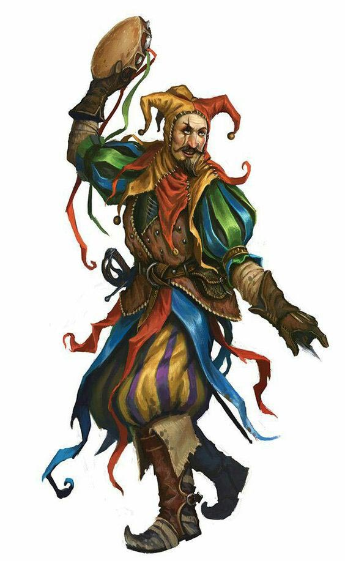
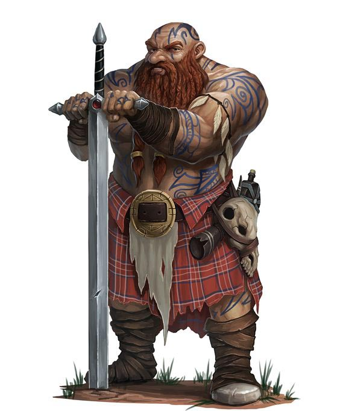
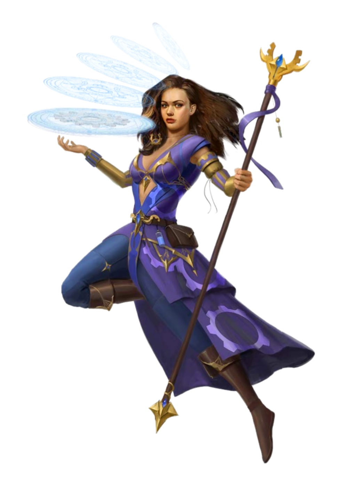
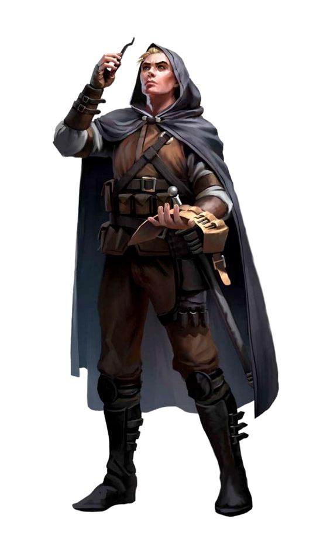
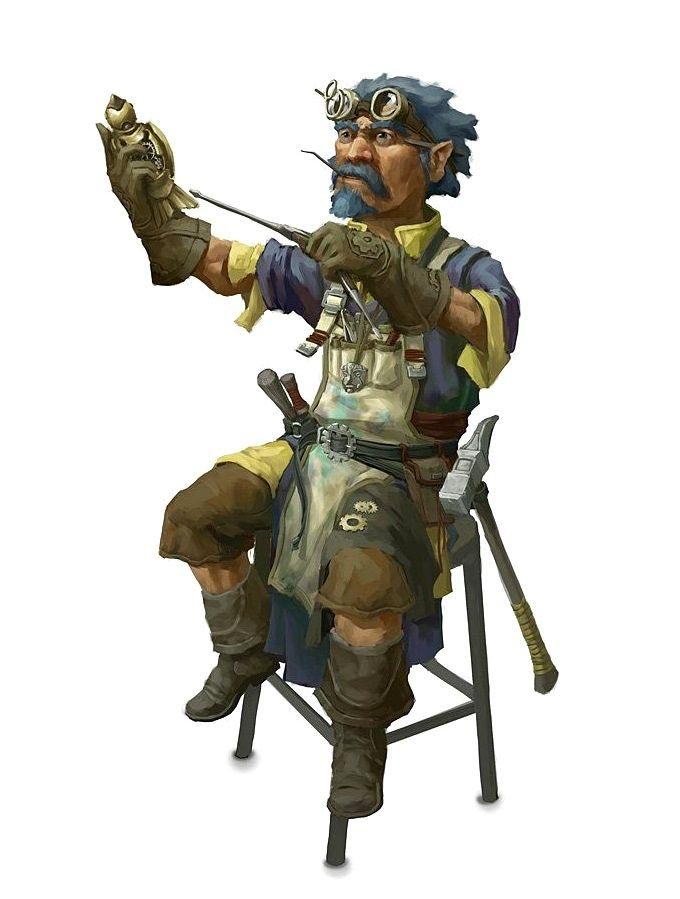
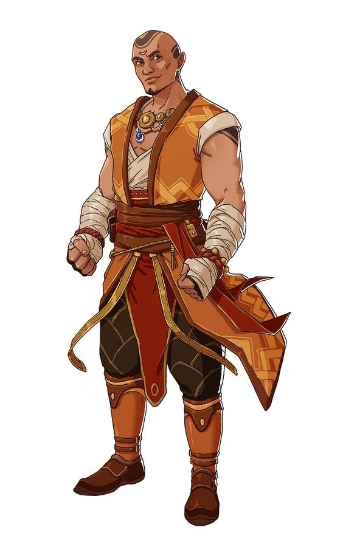

| Бард
Неважно, кем является бард: учёным, скальдом или проходимцем; он плетёт магию из слов и музыки, вдохновляя союзников, деморализуя противников, манипулируя сознанием, создавая иллюзии, и даже исцеляя раны. |
 |
|---|---|
| Варвар
Несмотря на разнообразие, всех варваров объединяет одно — их ярость. Необузданный, неугасимый и бездумный гнев. Не просто эмоция, их ярость как свирепость загнанного в угол хищника, как безжалостный удар урагана, как штормовые валы океана. Ярость некоторых из них проистекает из общения со свирепыми духами животных. Другие черпают её из злости на полную боли и страдания действительность. Но для каждого варвара ярость — это источник не только боевого безумия, но и невероятных рефлексов, стойкости, а также непревзойдённой силы. |
 |
| Волшебник
Волшебники — адепты высшей магии, объединяющиеся по типу своих заклинаний. Опираясь на тонкие плетения магии, пронизывающей вселенную, волшебники способны создавать заклинания взрывного огня, искрящихся молний, тонкого обмана и грубого контроля над сознанием. Их магия вызывает чудовищ с других планов бытия, предсказывает будущее и обращает поверженных врагов в зомби. Их самые могущественные заклинания могут превращать одно вещество в другое, вызывать метеориты с небес и открывать порталы в другие миры. |
 |
| Плут
Плуты полагаются на мастерство, скрытность и уязвимые места врагов, чтобы взять верх в любой ситуации. У них достаточно сноровки для нахождения решения в любой ситуации, демонстрируя находчивость и гибкость, которые являются краеугольным камнем любой успешной группы искателей приключений. |
 |
| Изобретатель
Изобретатели — величайшие мастера пробуждать магию в обычных предметах. Они рассматривают магию как сложную систему, которую следует расшифровать и применять в заклинаниях и изобретениях. Для направления своей магической силы они используют различные инструменты. Накладывая заклинание, изобретатель может использовать принадлежности алхимика для создания мощного эликсира, набор каллиграфа, чтобы нарисовать знак силы на доспехах союзника или инструменты ремонтника, чтобы создать временный амулет. Магия изобретателей связана с их инструментами и способностями, и мало кто, кроме них, сможет создать правильный рабочий инструмент. |  |
| Монах
Вне зависимости от выбранной дисциплины, всех монахов объединяет одно — возможность управлять энергией, текущей в их телах. Вне зависимости от того, проявляется ли она выдающимися боевыми способностями, или чуть заметным усилением защиты и скорости, эта энергия влияет на всё, что делает монах. |  |
{kind=link}
{kind=link}
{kind=link}
{kind=link}
{kind=link}
{kind=link}